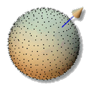
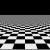

|  |
Sampling with Hammersley and Halton Points
,
and
, |
Abstract
- The Hammersley and Halton point sets, two well known low discrepancy sequences, have been used for quasi-Monte Carlo integration in previous research. A deterministic formula generates a uniformly distributed and stochastic-looking sampling pattern, at low computational cost. The Halton point set is also useful for incremental sampling. In this paper, we discuss detailed implementation issues and our experience of choosing suitable bases of the point sets, not just on the 2D plane, but also on a spherical surface. The sampling scheme is also applied to ray tracing, with a significant improvement in error.
Download Paper
- PostScript: udpoint.ps.gz (989,314 bytes)
- Acrobat: udpoint.pdf (681 KB)
Executable Demo
Two executable demostration programs are available for download.Program sphere demostrates the appearances of various Hammersley and Halton point sets on the sphere. Program plane demonstrates the appearances of various Hammersley and Halton point sets on the 2D plane.
sphere.gz
(SGI)plane.gz
(SGI)sphere.zip
(Win 98/NT)plane.zip
(Win 98/NT)Running instructions for both programs: When the program (both demo programs) starts, users can press key "1" - "9" and "A" - "B". Each key toggles the drawing of one point set (see the following table):
Key pressed Point set being drawn or erased 1 Random points with uniform distribution. 2 Hammersley points with p1 = 2. 3 Hammersley points with p1 = 3. 4 Hammersley points with p1 = 5. 5 Hammersley points with p1 = 7. 6 Hammersley points with p1 = 11. 7 Halton points with p1 = 2, p2 = 3. 8 Halton points with p1 = 2, p2 = 5. 9 Halton points with p1 = 2, p2 = 7. A Halton points with p1 = 3, p2 = 5. B Halton points with p1 = 3, p2 = 7. Download Source Code
Source code of the demo program using OpenGL (or Mesa), GLUT: udpoint.zip. The source codes listed in the appendix of the paper are also inside this demo package. The program works on both UNIX/Xwindows and Windows 98/NT.Ray Tracing Images
To verify the usefulness of the sampling scheme. We implemented it in a ray tracer. Two scenes are tested: check and check45. Due to the page limit of the paper, the generated images are not included in the paper. Instead, they are included in this web page. Click the following icons of two test scenes checker and checker45 for visual comparison of generated images of various sampling schemes.
 check check45